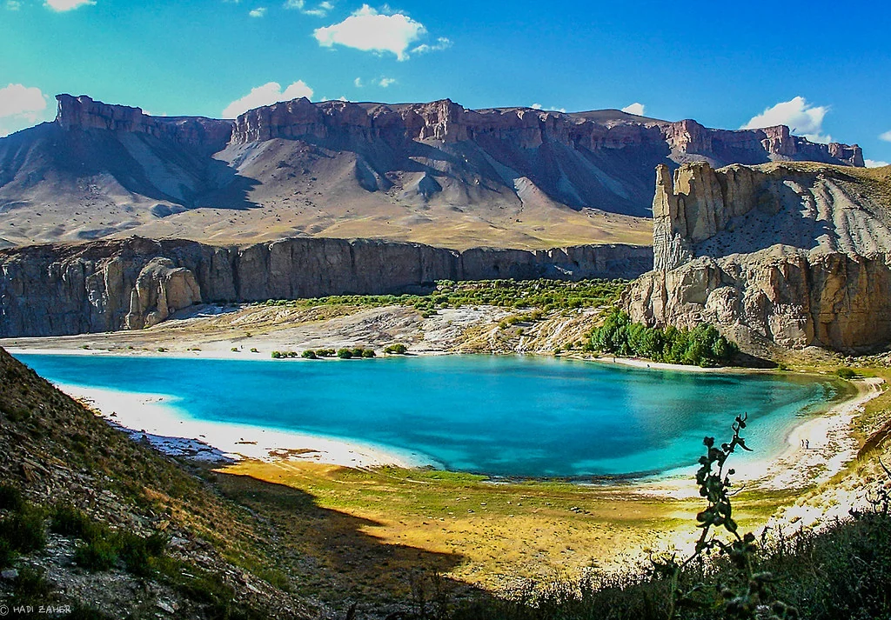
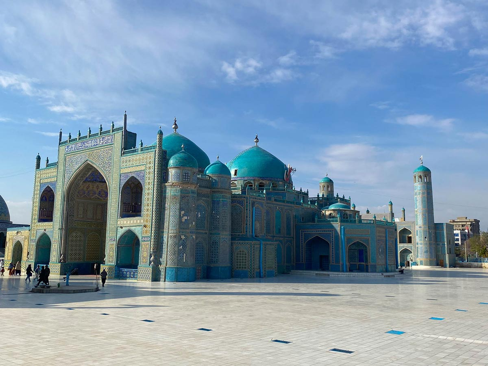

My favorite country is Afghanistan. It is a land of high mountains, like the Hindu Kush, and has a rich history that goes back thousands of years. Afghanistan is known for its warm hospitality, beautiful poetry, and delicious food such as Kabuli pulao. Two places I love are the deep blue lakes of Band-e Amir and the Blue Mosque in Mazar-i-Sharif.

